第一章
参考书籍:《计算机网络：自顶向下方法》
笑的，感谢学校的无线网络应用课程激起了我对计网的兴趣，非常好通识课。
绝对不会告诉你们只是因为做web忽然想读计网(恼)。
1 什么是因特网
1.1 具体构成描述
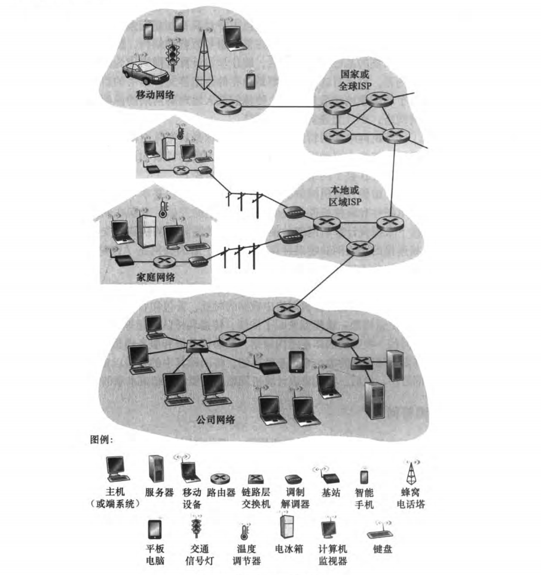
所有这种设备都被称为主机(host)或端系统(end system)，他们被通信链路(communication link)与分组交换机(packet switch)连接起来。链路的传输速率以bit/s(换成bps也许常见一点?)为单位。
当两个端系统通信时，发送端系统将数据分段，给每一段加收首部字节，由此形成的信息包称为分组(packet，所以为什么不叫"包"呢)。
顾名思义，分组交换机交换"分组"，从入通信链路接收，再从出通信链路发分组。两种最著名的分组交换机是路由器(router)和链路层交换机(link-layer switch)。链路层交换机通常位于接入网，路由器通常位于网络核心中。路径(route)是一个分组所经历的一系列通信链路与分组交换。
端系统通过因特网服务提供商(Internet Service Provider，ISP)连接到因特网。ISP本身就是一个由多台分组交换机与多段通信链路组成的网络，并将网络站点与服务器接入因特网。
端系统、分组交换机与其他因特网部件都需要一系列"协议"(protocol)，他们抗旨因特网信息的接收与发送。TCP(Transmission Control Protocol，传输控制协议)与IP(Internet Protocol，网际协议)是因特网中两个尤为重要的协议，因此因特网的主要协议统称为TCP/IP。
1.2 服务描述
设计多个相互交换数据的端协议，故他们被称为分布式应用程序(distributed application)。因特网应用程序运行在端系统上，即并非运行在网络核心中的分组交换机。
与因特网相连的端系统提供了一个套接字接口(socket interface)，该接口规定了运行在一个端系统上的程序请求因特网基础设施向运行在另一个端系统上的特定目的地程序交付数据的方式。
1.3 什么是协议
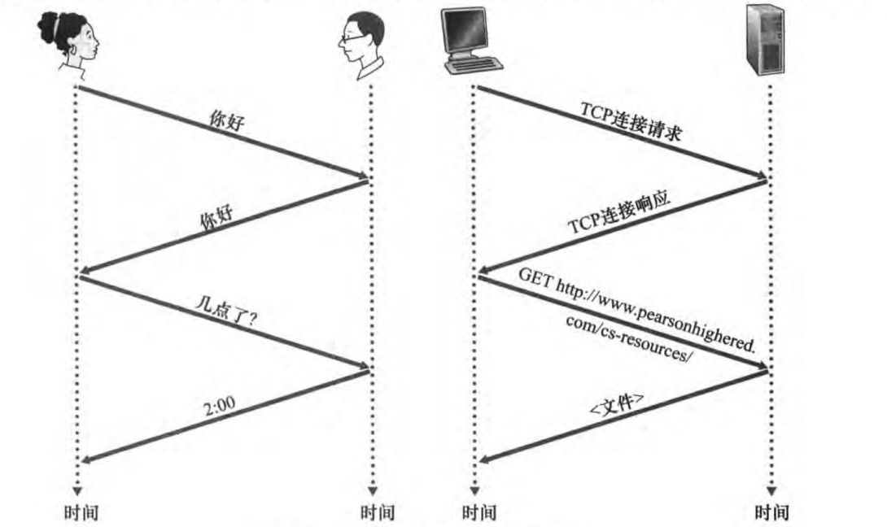
协议定义了在两个或多个通信实体之间交换的保温的格式与顺序，以及报文发送和/或接收一条报文或其他事件所采取的动作。
2 网络边缘
叫做端系统的原因是因为这些计算机与其他设备位于因特网的边缘。
端系统又叫做主机，原因是他们容纳(即运行)应用程序，他们有时又被分为两类，客户(client)与服务器(server)。客户一般指桌面PC，移动PC与手机，而服务器则是更为强大的设备，用于存储与发布网络页面、流视频、中继电子邮件等。如今，大部分起到这些作用的服务器被称为大型数据中心(data center)。
2.1 接入网
接入网是将端系统物理连接到其边缘路由器(edge router)的网络，边缘路由器是指将所有端系统连接到任何其他远程端系统的路径上的第一台路由器。
DSL(数字用户线 Digital Subscriber Line)与电缆是宽带住宅接入的两种时兴方式。
FTTH(光纤到户 Fiber To The Home)，从本地中心局到家直接提供光纤路径的接入。
无线LAN(局域网)接入，即WiFi接入。
3G即第三代无线网络，用于广域无线接入。
2.2 物理媒体
对于每个"发射器-接收器"的对，通过跨越一种物理媒体(physical medium)传播电磁波或广脉冲传播比特，物理媒体分为导引型媒体(guided media)与非导引型媒体(unguided media)，其区别在于有无固体媒体。
导引型媒体：如双绞铜线、光纤；非导引型媒体：如无线局域网与数字卫星频道。
3 网络核心
3.1 分组交换
网络应用中，端系统彼此之间交换报文(message)，报文可以执行控制功能，也可以传递单纯的数据。为了传递之，源将长报文切割为较小的数据块，称之为分组。在路径上，每个分组都经历通信链路与分组交换机的传达。
存储转发运输(store-and-forward transmission):要求分组交换机在传输该分组之前必须接收到整个分组。
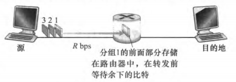
这里图中给出的简单通路中，我们忽略了传播时延(即忽略这些比特以近光速传播的耗时)，由于在分组交换机发送前需要缓存已有分组，因此L bits的分组需要2L/R的时间传播(称为时延)。
因此对于相对复杂的通路，总时延d总=N * L / R，其中N为通信链路的条数，我们也易看出N-1为路径分组交换机台数。
排队时延与分组输出
每个分组交换机都有多条通信链路与之相连，对于每条通信链路，分组交换机有一个输出缓存(output buffer，也称为输出队列output queue)。需要传输的分组，如果此时分组交换机正忙于传输其他分组，则其需要在输出缓存中等待，其损耗的时长即称为排队时延。由于缓存空间是有限的，所以一个已到达的分组可能发现缓存已经被存满了，此时将出现分组丢失(丢包 packet loss)，已到达的分组或排队的分组之一将被丢弃。
转发表与路由选择协议
在因特网中，每个端系统有一个被称为IP地址的地址。发送分组时，源端系统在分组头部包含了目的端系统IP地址，该端系统具有一个等级结构(我理解为转发顺序)，当分组到达一台路由器时，路由器检查其目的地址的一部分，并向相邻路由器转发(这个相邻指的应该是所谓等级结构的相邻)。转发表(forward table)在其中充当将目的地址(或其一部分)映射为通信链路的角色。总结起来，某一分组到达一台路由器，并利用其目的地址搜索转发表，以发现适当的出链路，路由器则将分组导向之。
因特网具有一些特殊的路由选择协议(routing protocol)，用于自动设置这些转发表。
3.2 电路交换
通过网络链路与分组交换机移动数据的方式有电路交换(circuit switching)与分组交换(packet switvhing)。
在电路交换网络中，预留了端系统之间沿路径通信所需要的资源(缓存、链路传输速率等)，而在分组交换网络中，其不是预留的，会话的报文按需使用这些资源其后果可能是不得不等待(排队)接入链路。将其类比为是否预定的餐馆即可，其重点在于是将时间花费在预定餐位(即预留资源)还是排队等待(即分组排队接入)上。
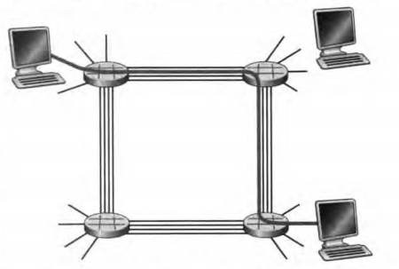
在给出的示例中，每台主机都有一台路由器与之直接相连。当例如主机A与B之间想要建立通信，网络在其中建立一条专用的端到端连接(end-to-end connection)。如图所示，专用的链路被加粗标出，其就为预留出的。该连接获得链路总传输速率的1/4。对于分组交换，由于不进行预留，如若也想走标黑的通路，其就要排队，产生时延损耗。
电路交换网络中的复用
链路中的电路是通过频分复用(Frequency-Division Multiplexing FDM)与时分复用(Time-Division Multiplexing)来实现的。对于FDM，链路的频谱由跨越链路创建的所有连接共享。特别是，在连接期间链路为每条连接专用一个频段。
对于TDM，则是将每帧都分为特定长度的时隙，当网络跨越一条链路建立连接时，网络在每个帧中为该连接指定一个时隙，这些时隙由这个连接单独使用。
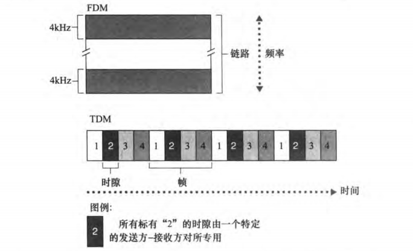
分组交换与电路交换的对比
电路交换在静默期(silent period)空闲而不够经济。
总体而言，分组交换更经济。
经济
从直觉上而言，预定餐位是追求稳妥的行为，但是"经济"方面的对比必须同时考虑"客人"与"店家"。
3.3 网络的网络
4 分组交换网中的时延、丢包和吞吐量
4.1 分组交换网中的时延概叙
节点处理时延(nodal processing delay)、排队时延(queueing delay)、传输时延(transmission delay)、传播时延(propagation delay)总体累加起来就为节点总时延(total nodal delay)。
时延的类型
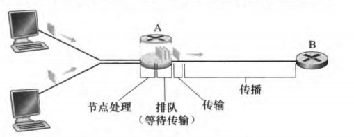
-
处理时延：检查分组首部并决定将其传向何处需要的时间是其一部分，除此之外还包括例如检查比特级别的差错所需要的时间，该差错是在从上游节点传向路由器A的过程中出现的。高速路由器的处理时间为微秒或更低的数量级。
-
排队时延：分组在链路上等待传输的时间，一个特定分组的排队时延长度将取决于该链路上正在排队的其他分组数量。由于其是可变的，其数量级可能为毫秒到微秒级。
-
传输时延：用L表示某分组的比特长度，用R表示该链路传播分组的速率(单位为诸如bps)，则传输时延为L/R。其数量级通常为毫秒到微秒量级。
-
传播时延：用d表示链路的长度，用s表示在链路中信号传播的速度(该速度与光速基本同数量级，略低于光速)，则传播时延为d/s。在广域网中，其数量级为微秒量级。
dnodal = dproc + dqueue + dtrans + dprop
4.2 排队时延和丢包
令a为分组到达队列的平均速率(单位为pkt/t)，假定每个分组的长度为L，用R表示信号传播速率，其实也就是从队列中推出分组的速率，则定义L*a / R为流量强度(traffic intensity)。不难看出流量强度>1时，流量入量超过出量，趋近于无限积累。因此设计系统时流量强度应小于等于1。
排队时延很大程度上取决于流量到达该队列的速率、链路的传播速率和到达流量的性质。
对于到达流量的性质，如果到达流量是周期性的，每L/R秒到达一个分组。则到达的总是空队列，因此其排队时延为0。如每N*L/R秒到达N个分组，则其排队时延为N-1个分组传输时延。
然而到达的分组流量显然是随机的，但是L*a/R可以用来反映其大致排队时延。
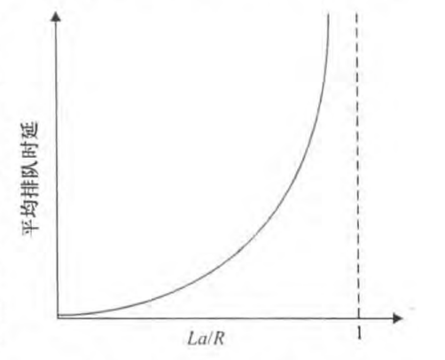
L*a/R越接近1，时延是以极高速度增加的。
丢包
当队列已满，路由器将丢弃(drop)到达的分组，即该分组将丢失(lost)。
4.3 端到端时延
前面的讨论针对的是节点时延，现在讨论端系统到端系统的时延。假设两个端系统之间有N-1个路由器，则端到端时延为： dend-end = N*(dproc + dtrans + dprop)
此时假设端到端通路是无拥塞的，因此dqueue = 0。同时dtrans = L/R。
4.4 计算机网络中的吞吐量
简单来说，吞吐量(throughput)是指路由器转发分组的速率，同时有瞬时吞吐率(instantaneous throughput)、平均吞吐量(average throughput)两个概念。
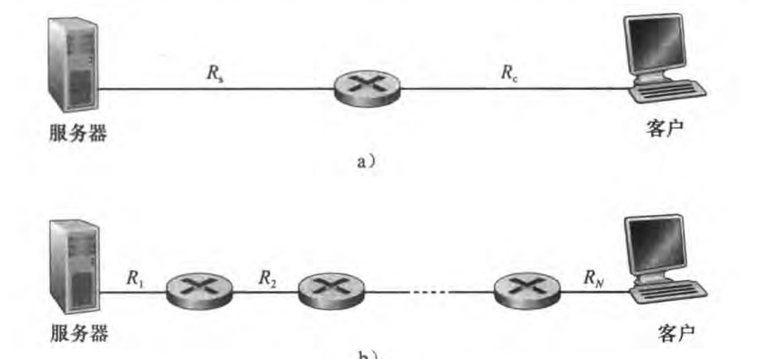
对于简单的两端通路而言，如果Rs < Rc，那么吞吐量就是Rs，因为"Rs"是瓶颈速率；而如果Rs > Rc，显然吞吐量为Rc，如果为Rc以上的速率，那么对于路由器入大于出，产生积压，这是我们不希望看到的。
那么这一情况下，吞吐量定义为min{Rs,Rc}，也就是说，它是平静链路(bottleneck link)的速率。传输F比特的文件所需时间就为F / min{Rs,Rc}。
以此类推，有N-1台路由器，吞吐量定义为min{R1,R2,R3,...,RN}。
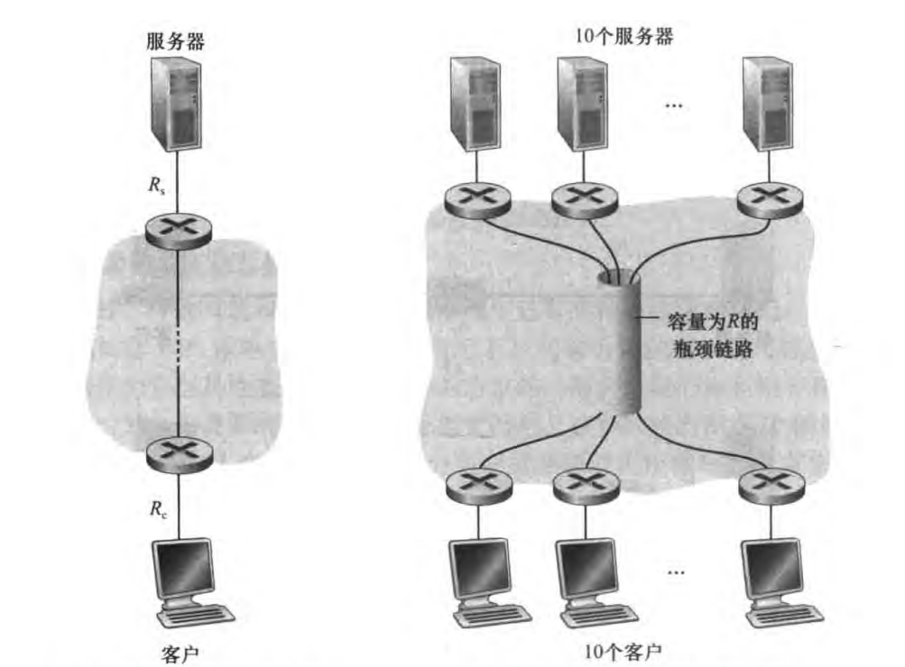
该图展示了吞吐量的"瓶颈"可变性，假设中间段R = 5Mbps，任一服务器传输的Rs为2Mbps，则一台服务器时，瓶颈为Rs；10台时则转为R段，因为按平分来计算，瓶颈为R/10，即0.5Mbps。
5 协议层次及其服务模型
5.1 分层的体系结构
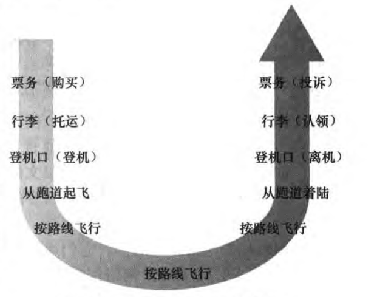
飞行经历的演示提示我们以水平的方式看待体系结构。
协议分层
网络设计者以分层(layer)的方式组织协议以及实现这些协议的网络软件与硬件，每个协议属于这些层次之一。我们也关注某层向其上一层提供的服务(service)，即所谓一层的服务模型(service model)。每层通过在本层执行某些动作或直接使用下一层的服务来提供服务。
应用层与运输层几乎总是在端系统的软件上实现，因为物理层与数字链路层要处理跨越特定链路的通信，它们通常在与给定链路相关联的网络接口卡(如以太网与WiFi接口卡)上实现。而网络层经常是软件与硬件共同实现的混合体。
各层的协议综合起来叫做协议栈(protocol stack)，因特网的协议栈包含五个层次，分别是应用层、运输层、网络层、链路层和物理层。我们采用自顶向下方法(top-down approach)来讨论有关层次。
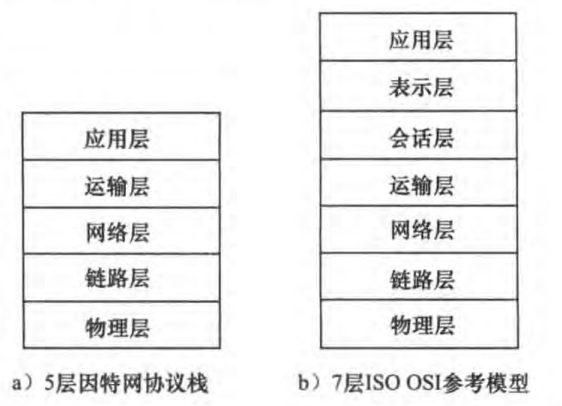
1.应用层
网络应用程序与它们的应用层协议留存的地方。因特网的应用层协议包含例如HTTP(提供了web文档的请求与传送)、FTP(提供端系统之间的文件传输)、SMTP(提供了电子邮件报文的传输)、DNS(域名系统，将例如www.google.com这样的域名解析为IP地址)等。
应用层协议分布在多个端系统上，而一个端系统上的应用程序与另一个端系统的应用程序使用协议交换信息分组，这些位于应用层的信息分组称为报文(message)。
2.运输层
运输层在应用程序端点之间传递报文。因特网中有两种运输协议TCP与UDP。TCP向其上层提供可靠的、包括流量控制与确保传递、面向连接的服务，其也将长报文分为短报文，并提供拥塞控制机制。而UDP则提供不提供不必要服务、不可靠的、没有拥塞与流量控制、无连接的服务。运输层的分组称为报文段(segment)。
可靠
"可靠"是指报文段从发送端系统到接收端系统时，其内容不会发生改变，且不会丢失。TCP发送ACK(确认应答)来确保报文段到达接收端系统。后续应该会细谈
3.网络层
网络层负责将称为数据报(datagram)的网络层分组从一台主机传输到另一台主机。
因特网的网络层包含著名的网络协议IP，其定义了在数据报各个字段以及端系统与路由器如何处理这些字段。网络层也包含许多路由选择协议，但通常将其简单称为IP层。
4.链路层
为了将分组从一个节点(主机或路由器)移动到下一个节点，网络层必须依靠链路层。特别是在每个节点，网络层将数据报下传到链路层，链路层将其沿着路径传到下一个节点，并在下一个节点将其上传到网络层。
链路层分组称为帧(frame)。
5.物理层
链路层的任务是将整个帧在网络元素之间传递，物理层任务是将该帧中一个个比特从一个节点传递到另一个节点。该层中的协议仍是与链路相关，且进一步与该链路(如双绞铜线、光纤等)的实际传输媒体相关。
OSI模型
OSI模型将网络体系结构分为七层，分别是物理层、数据链路层、网络层、传输层、会话层、表示层和应用层。
5.2 封装
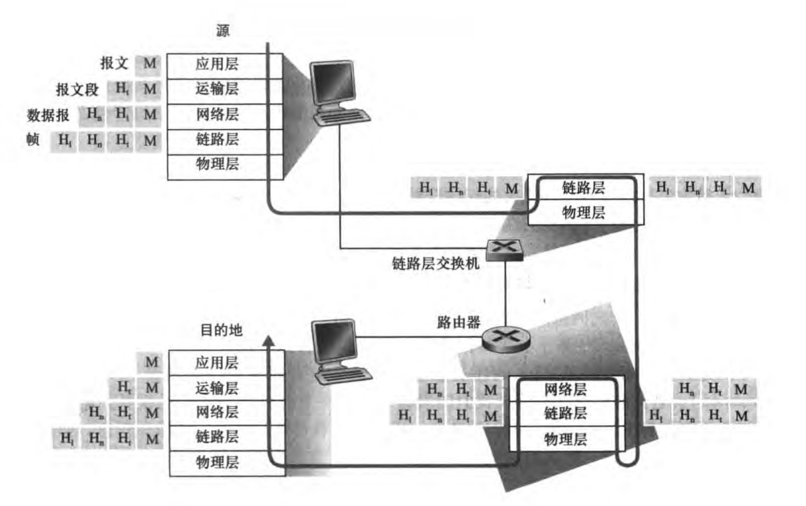
封装(encapsulation)
过程如下：在发送主机端，一个应用层报文(application-layer message) M被传送给运输层，最简单的情况下，运输层读取到信息并附加上运输层首部信息(H1)，构成运输层报文段(transport-layer segment)，这就是一个封装。然后，运输层将报文段传送给网络层，网络层读取到信息并附加上网络层首部信息(Hn)，构成网络层数据报(network-layer datagram)。接下来就是链路层的链路层帧(link-layer frame)。可以看到每层的分组具有两个字段，首部字符与有效载荷字段(payable field)，有效载荷字段来自上一层的分组。
然而实际封装更加复杂，例如大报文可能被分为好几个运输层报文段。